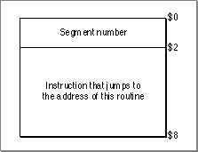

Legacy Document
Important: The information in this document is obsolete and should not be used for new development.
Important: The information in this document is obsolete and should not be used for new development.


The Jump Table
The loading and unloading of segments are controlled by the linker and the Segment Manager through the use of the jump table ('CODE'0), a data structure created by the linker. The jump table is always located at a fixed offset above A5 as shown previously in Figure 10-1.The jump table is used to track the state (loaded or unloaded) and the location of
'CODE'resources. The jump table keeps track of the location of each'CODE'resource and the offset of each routine inside each segment.
Figure 10-2 shows a call that goes through the jump table and a call that uses self-relative branching.
- If one routine needs to call another routine in a different segment (intersegment reference), it must go through the jump table to determine the address where the other routine starts. If the segment containing the externally referenced routine is unloaded, it must be loaded before jumping to the routine address.
- If a routine calls another routine in its own segment (intrasegment reference), it does not need the jump table. Although
'CODE'resources move in the heap, their contents are constant, so the routines always keep a constant distance apart and can be accessed using a self-relative (that is, a PC-relative) branch.
Figure 10-2 Using the jump table and using self-relative branching
When procedure A calls procedure B, procedure A must go through the jump table because the procedures are in different segments. But procedure C can call procedure B without going through the jump table because the procedures are in the same segment.
If you trace through code and see an instruction such as
JSR 60(A5)you are looking at a call to a routine in another code segment--that is, a call that must go through the jump table. Remember that A5 is used to reference the application's global variables and the jump table. Negative offsets from A5 reference global variables, while positive offsets that are greater than 32 refer to jump-table entries.The jump table is created by the linker when you build your application, and it is stored in the
'CODE'0resource (sometimes called segment 0). The structure of the'CODE'0resource is shown in Figure 10-3.Figure 10-3 The
'CODE'0resource
The elements of the
'CODE'0resource are as follows:
- Above A5 size. The size (in bytes) from the location pointed to by A5 to the upper end of the application space.
- Below A5 size. The size (in bytes) of the application's global variables plus the QuickDraw global variables.
- Jump table size. The size of the jump table. The jump table contains one 8-byte entry for each externally referenced routine.
- Jump table offset. The offset (in bytes) of the jump table from the location pointed to by A5. This offset is stored in the global variable
CurJTOffset.- Jump table. A contiguous list of jump table entries.
When the application is launched, the Segment Manager uses this information to place the jump table in the A5 world.
- Note
- For all applications, the offset to the jump table from the location pointed to by A5 is 32. The number of bytes above A5 is 32 plus the length of the jump table.

The linker creates a jump table entry for every routine that is called by a routine from a different segment. All entries for a particular segment are stored contiguously in the jump table. The structure of the entry varies depending on whether the referenced routine is in a loaded or unloaded segment. If the segment has not been loaded into memory, the jump table entry has the structure shown in Figure 10-4.
Figure 10-4 An unloaded jump table entry
A call that goes through the jump table has the form
- Note
- The jump table structure for unloaded segments is different if you are building with the
-model faroption. See "The Far Model Jump Table" (page 10-20) for more details.
JSRoffset(A5)where offset is the offset of the jump table entry for the routine from A5 plus 2 bytes. This results in the execution of the
MOVE.W #n, -SPinstruction, which places the number of the segment containing the routine on the stack. (The jump table refers to segments by the segment numbers assigned by the linker.)The next instruction invokes the
_LoadSegtrap, which loads the specified segment into memory. Then the Segment Manager can transform all the jump table entries for the segment into their loaded states as follows:
Figure 10-5 shows the structure of a loaded jump table entry.
- The Segment Manager loads the segment, locks it, double-dereferences it, and adds the offset, which is stored in the first word of the unloaded entry. This results in the actual address of the routine.
- The Segment Manager then builds the loaded entry format: it stores the segment number in the entry's first 2 bytes, and it stores a
JMPinstruction to the address it has calculated in the entry's last 6 bytes.
Figure 10-5 A loaded jump table entry

After transforming the jump table entries, the Segment Manager then calls the actual routine by executing the instruction in the last 6 bytes of the (now loaded) jump table entry. Any subsequent calls to the routine also execute this instruction.
Note that the last 6 bytes of the jump table entry are executed whether the segment is loaded or not. The effect of the instruction depends on the state of the entry at the time.
The jump table entries remain in their loaded state unless you call the
_UnloadSegroutine, which restores them to their unloaded state.Note that to set all the jump table entries for a segment to their loaded or unloaded state, the Segment Manager needs to know where in the jump table all the entries are located. It gets this information from the segment header. The segment header, which is 4 bytes long for the near model environment, contains the offset of the first routine's entry from the start of the jump table (2 bytes) and the number of entries for the segment (2 bytes). Figure 10-6 shows the segment header.
Figure 10-6 Near model segment header
- Note
- The segment header is different for the far model environment. See "The Far Model Segment Header Structure" (page 10-23), for more information.
© Apple Computer, Inc.
11 MARCH 1997